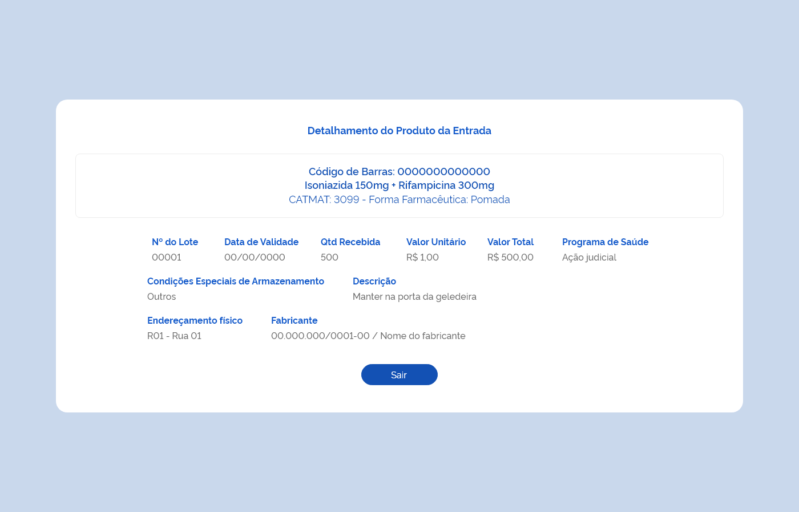

ETE020 - Cadastrar Entrada
Descrição
Como usuário quero cadastrar uma entrada de produto(s) para adicioná-lo(s) ao estoque do estabelecimento de saúde logado
Protótipo 001
[Inserir imagem]
Acesso
Menu lateral > Movimentações > Entrada > acionar botão “novo”.
Critérios de Aceite
- O usuário somente pode acessar a funcionalidade caso tenha permissão; RGN001
-
No campo “Modalidade de Licitação”, o sistema deve apresentar as opções:
- Concorrência
- Convite
- Dispensa de licitação
- Inexigibilidade
- Ministério da Saúde
- Pregão
- Requisição
- Tomada de preço
-
No campo “Tipo de Movimentação”, o sistema deve apresentar as opções:
- Ajuste de estoque
- Entrada ordinária
- Entrada por estorno
- Entrada por estorno de dispensação
- Produção própria
- Saída por estorno
- Saldo de implantação
Exceto os tipos de movimentação criados para entradas geradas automaticamente pelo sistema:
- “Entrada por Estorno de Saída”
- “Entrada por Estorno de Dispensação”
- “Entrada por Estorno de Distribuição”
-
No campo “Tipo de Documento”, o sistema deve apresentar as opções: A. Aviso B. Boletim C. Carta D. Certidão E. Circular F. Comprovante G. Contrato H. Convênio I. Decreto J. Despacho K. Edital L. Fax M. Guia N. Guia de remessa O. Instrução Normativa P. Memorando Q. Mensagem R. Nota Fiscal S. Nota Fiscal Eletrônica T. Ofício
-
Quando o usuário selecionar “Saldo de Implantação” ou “Ajuste de Estoque” no campo “Tipo de Movimentação”, os campos a seguir deixam de ser obrigatórios:
- “Modalidade de Licitação”
- “CNES/CNPJ” (fornecedor)
- “Razão Social” (fornecedor)
- “Tipo de Documento”
- “Número do Documento”
- “Data do Documento”
Ao selecionar a opção “Produção Própria” no campo “Tipo de Movimentação”, os campos a seguir deixam de ser obrigatórios:
- “Tipo de Documento”
- “Número do Documento”
- “Data do Documento” RGN024
-
O sistema deve validar a data do documento informada:
- O campo “Valor do Documento” deve ser desabilitado para edição, com valor inicial 0 (zero) e o sistema deve calculá-lo automaticamente somando todos os valores totais dos produtos adicionados à entrada e apresentado em reais (R$) com até 2 dígitos após a virgula, realizando o arredondamento do valor se necessário. RGN026 RGN028;
- Quando o usuário informar o CNES ou CNPJ do fornecedor e acionar a consulta, o sistema deve:
- Validar o CNES ou CNPJ. Caso o dado seja inválido, o sistema deve realçar o campo e alertar ao usuário. MSG015;
- Recuperar e apresentar o nome do fornecedor do CNES informado, através da integração com o portal do Cadastro Nacional dos Estabelecimentos de Saúde (CNES). Caso não seja encontrado um estabelecimento para o dado informado, o sistema deve apresentar uma mensagem de alerta ao usuário. RGN020 RGN021 MSG017;
- Recuperar e apresentar a razão social do fornecedor do CNPJ informado, através da integração com o portal da Receita Federal do Brasil (RFB). Caso não seja encontrado a pessoa jurídica para o CNPJ, o sistema deve apresentar uma mensagem de alerta ao usuário. RGN020 RGN021 MSG017.
- O campo “Data do Recebimento” dever ser preenchido automaticamente com a data atual e habilitado para edição;
- O sistema deve validar a data de recebimento informada:
- O campo “Data do Armazenamento” dever ser preenchido automaticamente com a data atual e desabilitado para edição;
- O campo “Em Análise” pode ser selecionado enquanto o(s) produtos da entrada não for(em) armazenado(s). Quando for selecionado, o sistema desabilita o botão “Armazenar”;
-
Quando o usuário acionar a opção de “Salvar”, o sistema deve verificar se:
- Existe uma entrada com o mesmo tipo, número de documento e fornecedor de uma entrada armazenada ou em preenchimento para o estabelecimento. Caso sim, o sistema apresenta uma mensagem de alerta ao usuário e permanece na tela de cadastro da entrada. RGN029 MSG028;
Atendendo a validações, o sistema grava o registro da entrada com estado “Ativo” e a situação “Em preenchimento”, mantêm os campos habilitados para edição, permanece na tela de cadastro da entrada e apresenta o campo “Produto(s)”. MSG031 MSG030 RGN005;
-
Quando o usuário acionar a opção “Limpar”, o sistema deve apresentar a mensagem de alerta ao usuário. Caso confirme a ação, limpar os campos preenchidos e permanecer na tela de cadastro da entrada. Caso a ação não seja confirmada, não limpar os dados informados e permanecer na tela de cadastro da entrada. MSG065;
- Quando o usuário acionar a opção de “Voltar” ou “Consultar”, o sistema deve apresentar a mensagem de alerta ao usuário. Caso confirme a ação, retornar à tela de consulta as entradas e não salvar as edições realizadas. Caso a ação não seja confirmada, permanece na tela de cadastro da entrada. MSG006;
- O sistema deve gravar a data, hora e CPF e nome do usuário que a executou qualquer ação de alteração no estado do registro. RGN005.
Protótipo 002
[Inserir imagem]
Acesso
Menu lateral > Movimentações > Entrada > acionar botão “novo”> “Produtos”
Critérios de Aceite
-
No campo “Produto” quando o usuário informar:
- O Código de Barras do produto, o sistema deve:
- O Princípio Ativo ou Nome Comercial de um Medicamento ou Descrição do Produto para Saúde, o sistema deve:
-
O usuário deve selecionar o produto que deseja adicionar na lista produtos ativos no sistema;
- O sistema não deve permitir adicionar um produto já relacionado à entrada. MSG023.
Protótipo 003
[Inserir imagem]
Acesso
Menu lateral > Movimentações > Entrada > acionar botão “novo”> “Produtos”
Critérios de Aceite
- Quando o usuário realizar a busca de um produto e selecioná-lo, o sistema deve incluí-lo a lista de produtos adicionados à entrada. A lista será expansiva, permitindo o preenchimento dos campos de detalhamento do produto. RGN023;
- O(s) produto(s) adicionado(s) à entrada pode(m) ser excluído(s), antes de ser armazenados no sistema. RGN025;
- O campo “Qtd Total” deve ser desabilitado para edição e o sistema deve:
- Recuperar automaticamente a quantidade informada no campo “Qtd. Recebida” quando apenas um detalhamento do produto for adicionado;
- Calcular automaticamente somando todas as quantidades informadas nos detalhamentos adicionados ao produto. RGN037;
- O campo “Valor Unitário” será carregado automaticamente com o dado informado neste campo no primeiro detalhamento do produto adicionado, ser apresentado em reais (R$) com até 9 dígitos após a virgula e desabilitado para edição;
- O campo “Valor Total” deve ser desabilitado para edição, calculado automaticamente através da fórmula: Qtd Total Recebida X Valor Unitário do produto e apresentado em reais (R$) com até 2 dígitos após a virgula, realizando o arredondamento do valor se necessário. RGN027 RGN028;
- No detalhamento do Produto, o sistema deve verificar se:
- A data de validade informada é anterior ou igual à data atual ou com vencimento superior a 10 anos e emitir um alerta ao usuário. MSG024;
- A quantidade recebida do produto é inferior a 1 e emitir um alerta ao usuário. MSG025;
- O valor unitário informado para o produto é inferior a 0 e emitir um alerta ao usuário. MSG026.
- No campo “Valor Unitário” no detalhamento do Produto, o sistema deve:
- Apresentá-lo em reais (R$) com até 2 dígitos após a virgula;
- Atribuir o mesmo valor unitário informado no primeiro detalhamento desse produto aos demais detalhamentos e desabilitar o campo para edição.
-
No campo “Programa de Saúde” no detalhamento do Produto, o sistema deve apresentar as opções:
- JUDICIALIZAÇÃO
- ALIMENTAÇÃO E NUTRIÇÃO
- ALZHEIMER
- ANTIMICROBIANO
- ASSISTÊNCIA FARMACÊUTICA
- ASSISTÊNCIA FARMACÊUTICA BÁSICA
- ASSISTÊNCIA FARMACÊUTICA SESAI
- ASSISTÊNCIA SOCIAL
- ATENÇÃO SECUNDÁRIA
- BRUCELOSE
- CALAMIDADE PÚBLICA
- COAGULOPATIAS
- CÓLERA
- COQUELUCHE
- COVID-19
- DENGUE
- DIABETES
- DOENÇA DE CHAGAS
- DOENÇA DE PARKISON
- ENXERTO CONTRA HOSPEDEIRO
-
No campo “Condições Especiais de Armazenamento” no detalhamento do Produto, o sistema deve apresentar as opções:
- Climatizado (15°C a 30°C)
- Congelado (Abaixo de 0°C)
- Resfriado (2°C a 8°C)
- Sem Condições Especiais
- Outros.
-
No campo “Endereçamento Físico” no detalhamento do Produto, o sistema deve:
- Desabilitá-lo para edição quando o estabelecimento não possuir um endereçamento físico cadastrado e ativo;
- Preenche-lo automaticamente com endereçamento físico quando o estabelecimento possuir apenas um endereço cadastrado e ativo;
- Apresentar a lista de endereçamentos físicos cadastrados e ativos para o estabelecimento quando este possuir mais de um endereço.
- Quando o usuário informar o CNES ou CNPJ do fabricante e acionar a consulta, o sistema deve:
- Validar o CNES ou CNPJ. Caso o dado seja inválido, o sistema deve realçar o campo e alertar ao usuário. MSG015;
- Recuperar e apresentar o nome do fabricante do CNES informado, através da integração com o portal do Cadastro Nacional dos Estabelecimentos de Saúde (CNES). Caso não seja encontrado um estabelecimento para o dado informado, o sistema deve apresentar uma mensagem de alerta ao usuário. RGN020 RGN021 MSG045;
- Recuperar e apresentar a razão social do fabricante do CNPJ informado, através da integração com o portal da Receita Federal do Brasil (RFB). Caso não seja encontrado a pessoa jurídica para o CNPJ, o sistema deve apresentar uma mensagem de alerta ao usuário. RGN020 RGN021 MSG045;
- O sistema deve permitir adicionar mais de um detalhamento ao produto, permitindo a entrada do mesmo produto com lotes e datas de validades diferentes;
- O sistema não deve permitir adicionar um detalhamento com o mesmo Nº do Lote e Data de Validade de um detalhamento já vinculado o produto na entrada. MSG027;
- Quando o usuário acionar a opção “Incluir”, o sistema deve gravar os dados do detalhamento e os apresentar na lista contendo: Nº do Lote, Data de Validade, Qtd Recebida e Programa de Saúde, com as ações “Excluir” para cada registro;
- Quando o usuário acionar a opção “Limpar”, o sistema deve limpar os campos preenchidos no detalhamento;
- Quando o usuário acionar a opção “Excluir” o registro de um detalhamento, o sistema deve excluí-lo da lista de detalhamento(s) do produto. RGN016;
-
Quando o usuário acionar a opção “Armazenar”, o sistema deve verificar se:
- Existe ao menos um produto relacionado à entrada. Caso não, o sistema apresenta uma mensagem de alerta ao usuário e permanece na tela de cadastro da entrada. MSG030;
- O detalhamento de todos os produtos da entrada foi incluído. Caso não, o sistema apresenta uma mensagem de alerta ao usuário e permanece na tela de cadastro da entrada. MSG029.
Atendendo as validações, o sistema efetiva o cadastro da entrada, mantém o estado do registro como “Ativo” e a situação como “Armazenada”, armazena os produtos no estoque do estabelecimento, apresenta a mensagem de sucesso, retorna à tela de consulta às entradas e apresenta este registro como o primeiro da relação das entradas cadastradas para o estabelecimento. MSG044 RGN030 RGN005.
-
O sistema, identificando que uma entrada de produto(s) foi armazenada, deve creditar a quantidade no saldo deste(s), considerando lote, validade e programa de saúde e atualizar a posição de estoque do estabelecimento que realizou a entrada. RGN031;
-
Quando o usuário acionar a opção de “Salvar Parcial”, o sistema deve verificar se:
- Existe ao menos um detalhamento vinculado ao(s) produto(s) da entrada. Caso não, o sistema apresenta uma mensagem de alerta ao usuário e permanece na tela de cadastro da entrada. MSG029;
Atendendo as validações, o sistema mantém o registro da entrada com estado “Ativo” e a situação “Em preenchimento” e permanece na tela de cadastro da entrada. MSG031 RGN030 RGN005;
-
Quando o usuário acionar a opção de “Voltar” ou “Consultar”, o sistema deve apresentar a mensagem de alerta ao usuário. Caso confirme a ação, retornar à tela de consulta as entradas e não salvar as edições realizadas. Caso a ação não seja confirmada, permanece na tela de cadastro da entrada. MSG006;
- O sistema deve gravar a data, hora e CPF e nome do usuário que a executou qualquer ação de alteração no estado do registro. RGN005.
Protótipo 004

Critérios de Aceite
- O acesso aos dados de um detalhamento do produto da entrada é realizado quando o usuário acionar a opção “Detalhar” no cadastro da entrada;
- O sistema deve recuperar e apresentar os dados relacionados ao detalhamento do produto da entrada que o usuário deseja detalhar;
- Caso algum campo retornar vazio, o sistema deve apresentar a descrição “Sem informação”;
- Quando o usuário acionar a opção “Sair”, o sistema deve retornar à tela de “Cadastro da Entrada”.